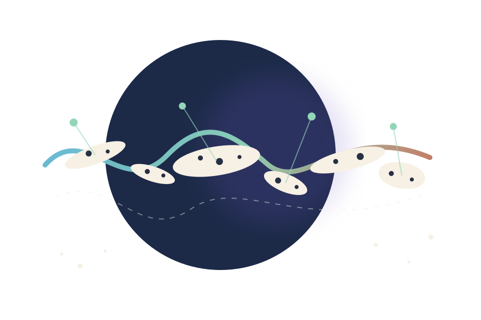
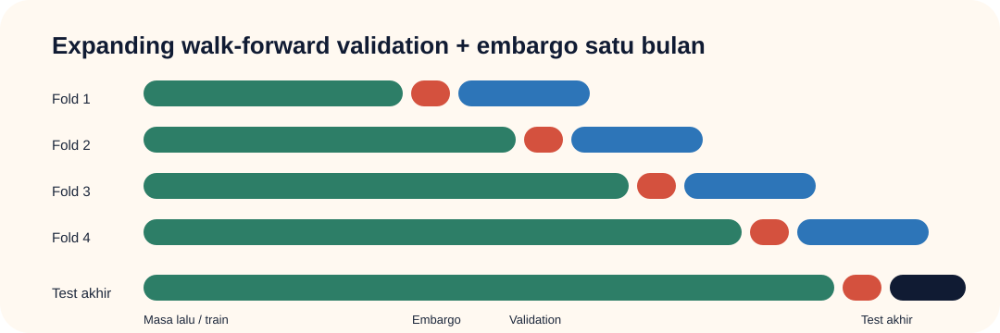
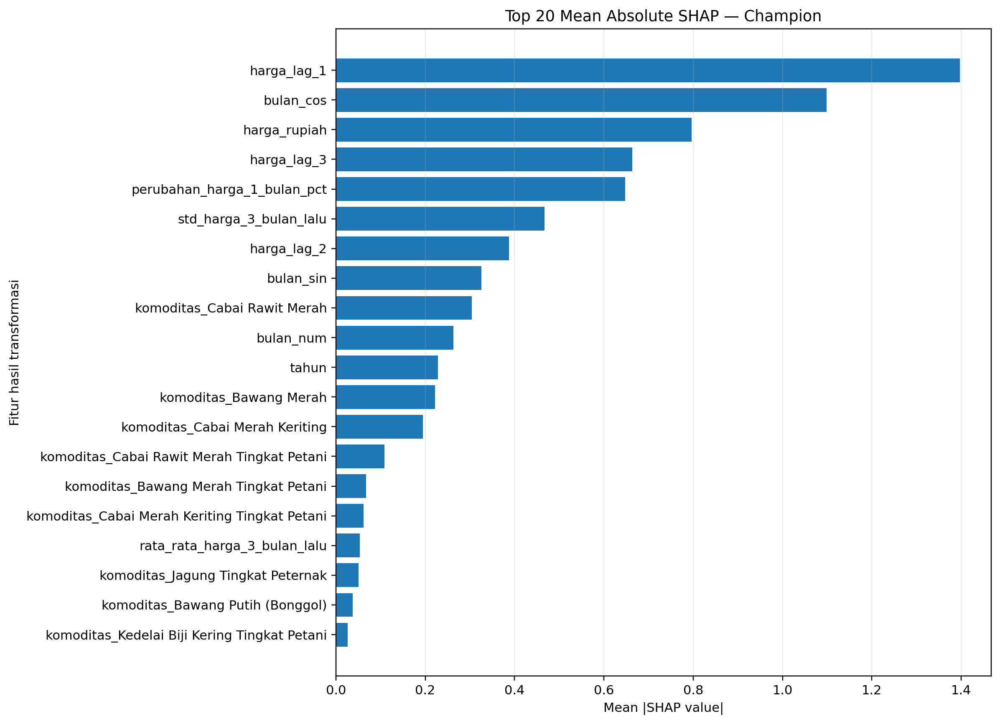
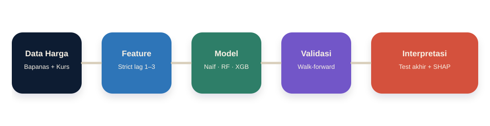

Pangan Pulse · Riset Data Science
Apakah kurs dolar benar-benar membantu membaca perubahan harga pangan?
Evaluasi machine learning pada harga pangan konsumen dan produsen antarprovinsi di Indonesia, 2022–2025.

Temuan utama
Model kompleks tidak otomatis lebih unggul.
Penelitian ini tidak memilih model dari hasil test akhir. Model dipilih melalui validasi waktu yang ketat, lalu diuji sekali pada periode yang benar-benar disisihkan.
Pada test akhir, baseline persistensi memiliki MAE 5,271 poin persentase. Champion Random Forest memiliki MAE 5,538. Baseline sederhana masih sedikit lebih akurat pada data yang belum pernah dilihat.

Eksperimen USD/IDR
Kurs diuji, bukan diasumsikan menang.
USD/IDR masuk sebagai fitur tambahan melalui eksperimen ablation: model dengan kurs dibandingkan dengan model tanpa kurs.
Dalam empat fold validasi, model tanpa USD/IDR lebih konsisten. Pada test akhir XGBoost dengan USD/IDR membaik, tetapi test akhir tidak dipakai untuk memilih model. Kesimpulannya: nilai tambah USD/IDR belum stabil.
MAE test akhir, poin persentase. Nilai lebih kecil lebih baik.
Explainable machine learning
Model terutama membaca riwayat harga dan musim.
SHAP membantu membaca fitur yang paling banyak dipakai model ketika membuat prediksi. Ini menjelaskan perilaku model, bukan membuktikan sebab-akibat ekonomi.
Riwayat harga dan musiman jauh lebih dominan bagi model champion dibandingkan perbedaan provinsi atau level harga.

Metodologi
Desain evaluasi yang tidak mengintip masa depan.
Harga bulan berikutnya menjadi target. Karena itu, pemisahan waktu, embargo satu bulan, dan test akhir yang dipisahkan diperlukan agar evaluasi tidak terlalu optimistis.
Dashboard menyajikan backtesting historis. Ini bukan sistem rekomendasi harga masa depan dan bukan bukti hubungan kausal.

Artefak penelitian
Data, figure, dan metode dapat ditelusuri.
Halaman produksi sebaiknya menyediakan unduhan hasil penelitian, metadata model, tabel BAB IV, dan figure tanpa mengubah nilai asli.